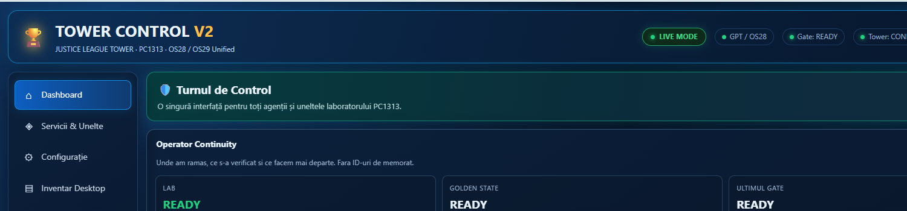
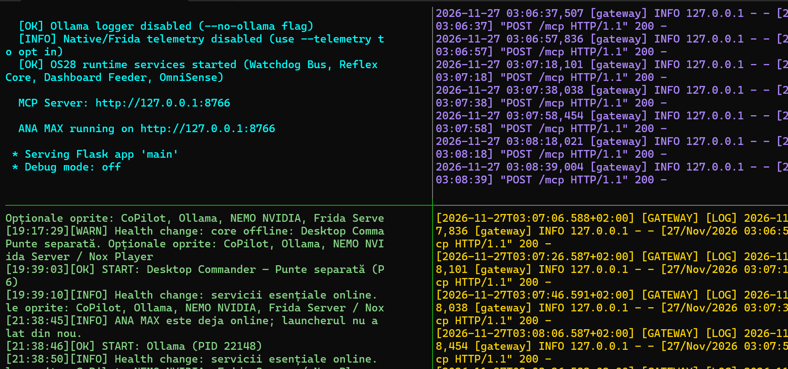

Control Tower
One place to see what AI agents did, what they proved, and what comes next.
Based on the actual local Tower V2
Operator Continuity
Where each mission stands
The sequence is a browser simulation of the documented collaborative repair, not a rerun of the original experiment.
Two AI agents · One real bug · Evidence
GPT-6 reproduced the issue; local Qwen 7B contributed a partial patch; GPT-6 finished and verified it. The local model did not solve the entire bug independently.
Service status · sample
Recent activity · sample
Inside the actual lab


Services & Tools
OS28 tool layer
OS28 is the workbench: a compatible agent can discover and call tools in its configured environment. The public Core release does not include the entire private OS28 laboratory.
Historical local inventory, November 27, 2026. Counts overlap; not all entries were individually tested and the private catalog is not shipped with OS29 Core.
Configuration
In the real Tower, operators manage a local tool catalog and launch profiles. This public configuration applies only to this demo.
Desktop Inventory
Example launchers are conceptual entries, not scanned files on your device.
Lab Profiles
Choose a sample profile to see how tools are grouped.
Logs & Diagnostics
Sample browser-generated activity. No private logs are loaded.
Work Units — OS29
A Work Unit stores a task, evidence, checkpoint and next action. A new agent can recover the work rather than repeat it.
Read the historical two-agent repair · Public technical report
AI Terminals — four-pane view
Illustrative output, not a live stream. Each panel has a different operational role.
Tower Control V2 architecture
Observe the work and decide what comes next
Reason and choose tools
Execute within the configured local environment
Work units, traces, evidence and retrieval
Show the evidence, next step and health state
Mobile Lab
Example grouping for authorized application testing and diagnostic instrumentation. No device or application is connected to this public demonstration.
A local operator configures the appropriate test environment. This page contains no instrumentation scripts or target data.
GPT / OS28 integration
OS28 provides callable tools; OS29 provides continuity. Tower makes the work visible. An agent client requires its own configured local or remote MCP connection.
Public demo: no ChatGPT account, installation or local service required. The private connector and full lab toolset are not included.
python -m os29.mcp_stdioGet the public Core and installation steps